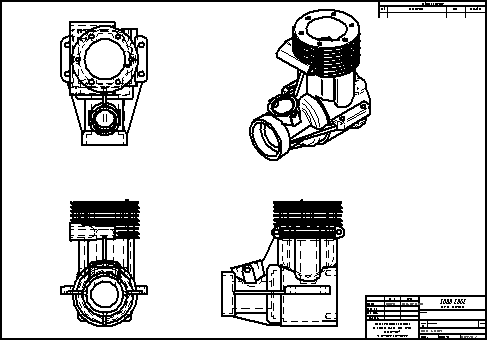
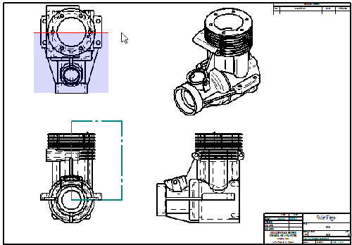
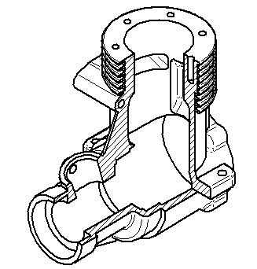
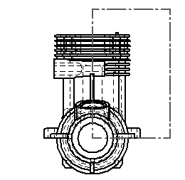
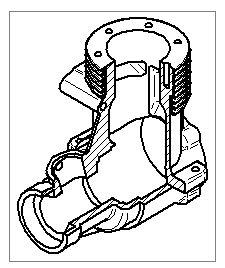
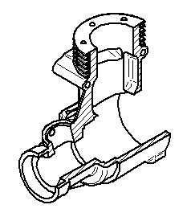

Activity: Broken-out section creation
This activity demonstrates the use of the Broken-Out section command.
After completing this activity, you will be able to create a broken section of a part on a draft sheet in Solid Edge.
Create a new ISO draft document.
-
Choose File →New→ISO Metric Draft.
Choose File → Settings → Options.
In the Solid Edge Options dialog box, click Drawing Standards. On the Drawing Standards page, set the Projection Angle to Third and the Thread Display Mode to ISO/BSI, and then click OK.
Use the View Wizard command to place four drawing views on the new sheet.
Choose the View Wizard command.
In the Select Model dialog box, make sure the Look in: field is set to the folder where you saved the activity files, and set the Files of Type option to Part Document (*.par).
Select crankcase.par and click Open.
Set the view scale to 2:1, and then click to place a front view in the bottom-left corner of the sheet. Using the initial view as the starting point each time, move the cursor and click to place a top view, followed by a right view, and then an iso view, so that they are arranged on the drawing sheet as shown below. Right-click to end drawing view placement mode.

Move the views so they fit on the sheet.
The section view will be displayed in the isometric view. Draw the profile defining the broken-out section in the front view.
Choose Home → Drawing Views → Broken-Out .
Select the front view. Beginning from the center of the circle, draw the profile shown.
Click Close Broken Out Section .
In the top view, define the extent of the section as shown.

Select the iso drawing view to apply the broken-out section to.

Right-click the iso view and click Properties.
In the High Quality View Properties dialog box, click the General tab and select the Show Broken-Out Section view profiles check box and then click OK.
The profile for the broken-out section for the iso drawing view is shown in the front drawing view.

To edit the profile, click the rectangular profile in the front view.
Click Modify Depth on the command bar.
Type 80 mm for the Depth and press Enter. Click Accept.
The iso view is now out of date, signified by the box around the view.

Click the Update View  to refresh the iso drawing view.
to refresh the iso drawing view.
The broken-out section appears as shown.

To remove a broken out section, delete the profile used to define the broken out region.
This completes the activity. Save the file as broken section.dft.
In this activity you learned how to create a broken-out section view. You also learned how to modify the broken-out section profile to create a different broken view representation.
-
Click the Close button in the upper-right corner of the activity window.